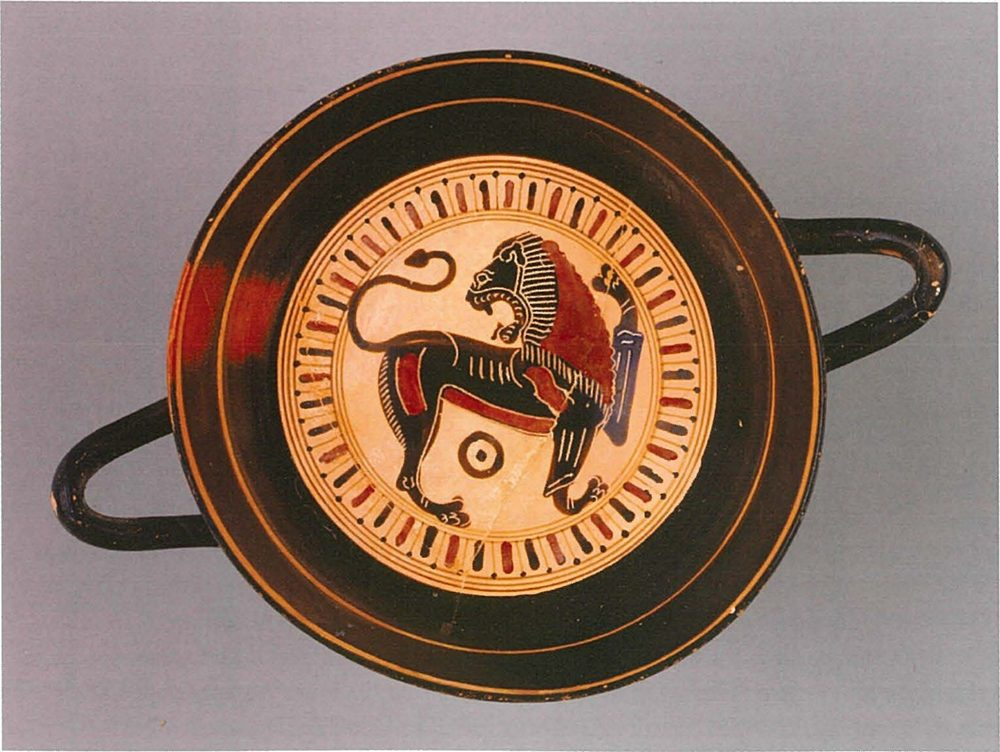
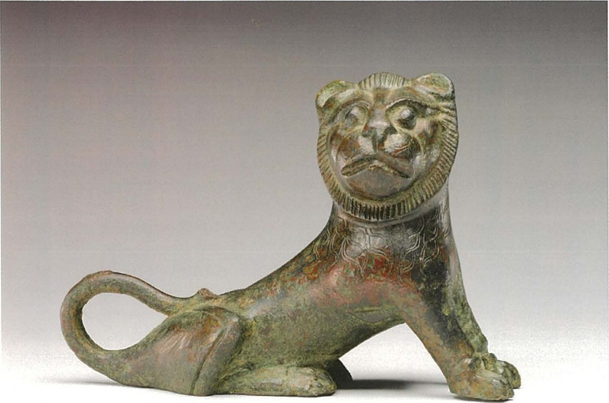
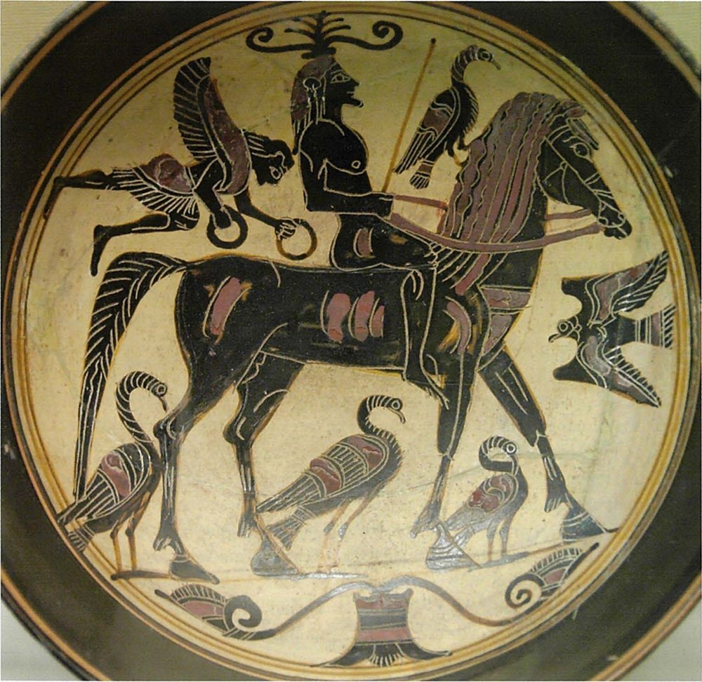

1 · Art in Archaic Sparta · I do — the evidence by medium
Four kinds of Laconian art
The increasing prosperity of Sparta is witnessed mainly through finds from the sanctuaries: bronze tripods, elaborate pottery, iron weapons, jewellery, carved ivories.
W. G. Cavanagh, ‘Introduction to Lakonian Archaeology’, in M. G. L. Cooley (ed.), Sparta (2023), on the Early Archaic period (8th–7th centuries BC)
Where were most of these things found — and who were they for?
In sanctuaries: most were gifts to the gods. Sanctuary finds are our main evidence of Spartan prosperity in this period.
| Medium | Examples | Date | |
|---|---|---|---|
| Ivory and bone | carved ivories from Orthia, such as a 7.5 cm ivory lion; later, bone instead of ivory | 7th–6th c. BC; bone after the mid-6th c. |  |
| Bronze | small figures, such as the bronze girl; vessels as grand as the Vix krater | 6th c. BC |  |
| Painted vases | Laconian black-figure: the Arkesilas, Rider and Hunt Painters | 6th c. BC |  |
| Stone | hero reliefs, such as the Chrysapha relief; no free-standing statues of young men or women | 6th c. BC |  |
1 · Art in Archaic Sparta · We do — ivory and bone
Ivory: a luxury from far away
A lion of the 7th century BC, only 7.5 cm long (Fig. 1) · a plaque of a ship and crew, “clumsily carved”, with one of Laconia’s earliest inscriptions — “possibly as early as the late 7th century BC” (C6)
There were no elephants in Greece. What does ivory at Orthia show?
The raw ivory was imported from the east, so Sparta was in contact — directly or through traders — with distant lands.
Who carved it: Spartiates, perioikoi or foreign craftsmen?
We do not know. The ivories were found at Orthia. Chapter 13 thinks their local subjects point to craftsmen working in Sparta; NESA’s 2021 guidelines raise the “Possibility of skilled foreign workers”.
What does a costly ivory offering say about taste and display?
Worshippers spent on small, finely carved, precious gifts — displayed to the gods at a sanctuary, not at home.
After the mid-6th century BC carvers increasingly used bone instead of ivory, possibly because the ivory trade was interrupted (Clarke & Garner). Bone could be local, so only the ivory proves imports.
1 · Art in Archaic Sparta · I do — recall Lesson 16, then ask what bronze shows
Small bronzes: what they show about taste and daily life

The same animal as the 7th-century ivory lion and the lion inside a Laconian cup: a subject in ivory, metal and paint.
She “may be running or, since she glances back, dancing” (Cooley D64) — perhaps a fixture on a vessel. Lesson 13.

Reclining with a shallow dish: feasting. But it “need not, of course, show any individual diner, let alone a Spartiate one” (Cooley E71).
The banqueter comes from the tripod-support of a bronze bowl, and the girl was perhaps a fixture on a vessel or utensil (D64): costly, skilled work for people with money to spend. The Vix krater (Lesson 16) is the same craft on a huge scale: bronze-working “reached a high point” (Cavanagh). But many were found far away, so some may have been made for buyers abroad.
1 · Art in Archaic Sparta · We do — stone
Stone: reliefs, not statues
This period saw the stone hero reliefs, which have been found both in Sparta and in perioikic Lakonia; however, as in much of the Peloponnese (in contrast to Attica and other regions), free standing kouroi/
W. G. Cavanagh, ‘Introduction to Lakonian Archaeology’, in Cooley (ed.), Sparta (2023), on the later Archaic period (6th–early 5th centuries BC)
What does the Chrysapha relief show?
A large seated couple, a snake behind them and tiny worshippers bringing gifts (c. 540 BC). Of a similar relief from Magoula, Cooley says: “A large snake opposite the young man suggests a heroized person” (C36).
What kind of stone sculpture is missing — and is that a Spartan oddity?
Free-standing kouroi and korai. Not just Sparta: “as in much of the Peloponnese”. Laconia’s Archaic stone sculpture was mainly relief.
Worship of the heroic dead, shared by Spartans and the perioikoi; the huge heroes and tiny worshippers show who mattered.
2 · Painted vases · We do — reading a painted scene
Everyday life — or myth?


Bradley calls the hunters “Spartans”. What else could they be?
Heroes of myth: painters often showed legendary hunts, and Cavanagh lists “images of heroes” among Laconian subjects.
What makes the rider more than an everyday ride?
The winged figures around him: the painter mixes the real — a horse and rider — with the divine or the imagined.
Many Laconian cups were found far from Laconia. Who were they made for?
Perhaps buyers abroad as well as Spartans. Cooley says the bronze banqueter “could equally well have been made for external consumption”; the same caution fits the cups.
A painted scene shows what painters and buyers liked to look at — riding, hunting, feasting, heroes. It is not a photograph of a Spartiate’s day.
4 · What art reveals · We do · 12 minutes · gallery walk · press K for the timer
Gallery: medium, date, find-spot — and what it reveals

Pairs: for each object note its medium, date and find-spot, and what it reveals about cultural or everyday life. Full captions are earlier in this lesson (the Arkesilas cup’s in Lesson 16) and on the credits slide.
| # | Medium · date | Find-spot | What it reveals |
|---|---|---|---|
| 1 Goddess plaque | ivory or bone · c. 650 BC (Hurley) | not given; shown with Orthia’s finds | a grand, richly dressed goddess; costly gifts for the gods |
| 2 Comb | ivory · not given | not given | an everyday object made precious, from imported ivory |
| 3 Lion | cast metal · c. 550 BC | not given | a taste for small animal figures; lions in ivory, metal and paint |
| 4 Girl | bronze · 520–500 BC | probably Prizren, Kosovo | active girls, running or dancing; Laconian bronzes travelled |
| 5 Banqueter | bronze · c. 530–500 BC | thought to be Dodona | feasting on couches — but not necessarily a Spartiate |
| 6 Chrysapha relief | marble · c. 540 BC | Chrysapha, near Sparta | worship of the heroic dead: gifts brought to a seated couple |
| 7 Arkesilas cup | clay, black-figure · c. 565–560 BC | Vulci, Italy | a painter’s skill and wide horizons; Laconian cups valued abroad |
| 8 Hunting cup | clay, black-figure · not given | not given | hunting as a subject painters and buyers liked — real or from myth |